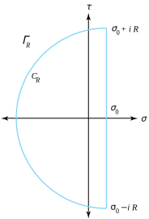

Skip to main content Contents Prev Up Next \(
\newcommand{\lt}{<}
\newcommand{\gt}{>}
\newcommand{\amp}{&}
\definecolor{fillinmathshade}{gray}{0.9}
\newcommand{\fillinmath}[1]{\mathchoice{\colorbox{fillinmathshade}{$\displaystyle \phantom{\,#1\,}$}}{\colorbox{fillinmathshade}{$\textstyle \phantom{\,#1\,}$}}{\colorbox{fillinmathshade}{$\scriptstyle \phantom{\,#1\,}$}}{\colorbox{fillinmathshade}{$\scriptscriptstyle\phantom{\,#1\,}$}}}
\)
Section 11.9 Inverting the Laplace Transform
So far, most of the applications involving the Laplace transform involve a transform (or part of a transform) that is expressed by
\begin{equation}
Y(s) = \frac{P(s)}{Q(s)}\text{.}\tag{11.9.1}
\end{equation}
where
\(P\) and
\(Q\) are polynomials that have no common factors. The inverse of
\(Y(s)\) is found by using its partial fraction representation and referring to
Table 11.5.10 . We now show how the theory of complex variables can be used to systematically find the partial fraction representation. The first result is an extension of
Lemma 8.4.4 to
\(n\) linear factors. The proof is left for the reader.
Theorem 11.9.1 . Nonrepeated Linear Factors.
Let
\(P(s)\) be a polynomial of degree at most
\(n-1\text{.}\) If
\(Q(s)\) has degree
\(n\text{,}\) and has distinct complex roots
\(a_1,a_2,\ldots,a_n\text{,}\) then Equation
(11.9.1) has the representation
\begin{equation}
Y(s) = \frac{P(s)}{(s-a_1)(s-a_2) \cdots (s-a_n)} = \sum_{k=1}^n\frac{\mathrm{Res}[Y,a_k]}{s-a_k}\text{.}\tag{11.9.2}
\end{equation}
Theorem 11.9.2 . A Repeated Linear Factor.
If
\(P(s)\) and
\(Q(s)\) are polynomials of degree
\(\mu\) and
\(v\text{,}\) respectively, and
\(\mu \lt v + n\) and
\(Q(a) \ne 0\text{,}\) then Equation
(11.9.1) has the representation
\begin{equation}
Y(s) = \frac{P(s)}{(s-a)^nQ(s)} = \sum_{k=1}^n\frac{A_k}{(s-a)^k} +R (s)\text{,}\tag{11.9.3}
\end{equation}
where \(R\) is the sum of all partial fractions that do not involve factors of the form \((s-a)^j\text{.}\) Furthermore, the coefficients \(A_k\) can be computed with the formula
\begin{equation}
A_k = \frac{1}{(n-k)}\lim_{s \to a}\left[\frac{d^{n-k}}{ds^{n-k}}\left(\frac{P(s)}{Q(s)}\right)\right] \text{ for } k=1,2,\ldots,n\text{.}\tag{11.9.4}
\end{equation}
Proof.
We employ the method of residues. First, multiplying both sides of Equation
(11.9.3) by
\((s-a)^n\) gives
\begin{equation*}
\frac{P(s)}{Q(s)}=\sum\limits_{j=1}^nA_j(s-a)^{n-j}+R(s)(s-a)^n\text{.}
\end{equation*}
We can differentiate both sides of this equation \(n-k\) times to obtain
\begin{equation*}
\frac{d^{n-k}}{ds^{n-k}}\left(\frac{P(s)}{Q(s)}\right) = \sum_{j=1}^kA_j\frac{(n-j)!}{(k-j)!}(s-a)^{k-j} + \frac{d^{n-k}}{ds^{n-k}}[R(s)(s-a)^n]\text{.}
\end{equation*}
In this equation, take the limit as \(s \to a\text{.}\) It is left as an exercise for the reader to fill in the steps to obtain
\begin{equation*}
\lim_{s \to a}\frac{d^{n-k}}{ds^{n-k}}\left(\frac{P(s)}{Q(s)}\right) = (n-k)! A_k\text{.}
\end{equation*}
Example 11.9.3 .
Let \(Y(s) =\frac{s^3-4s+1}{s(s-1)^3}\text{.}\) Find \(\mathcal{L}^{-1}\big(Y(s)\big)\text{.}\)
Solution .
\begin{equation*}
\frac{s^3-4s-1}{s(s-1)^3} = \frac{A_3}{(s-1)^3} + \frac{A_2}{(s-1)^2}+\frac{A_1}{s-1}+\frac{B_1}{s}\text{.}
\end{equation*}
The coefficient \(B_1\) is found by the calculation
\begin{equation*}
B_1 = \mathrm{Res}[Y,0] = \lim_{s \to 0}\frac{s^3-4s+1}{(s-1)^3} = -1\text{.}
\end{equation*}
The coefficients
\(A_1, \, A_2\text{,}\) and
\(A_3\) are found by using
Theorem 11.9.2 . In this case
\(a=1\) and
\(\frac{P(s)}{Q(s)} = \frac{s^3-4s+1}{s}\text{,}\) so we get
\begin{align*}
A_3 \amp = \lim_{s \to 1}\left(\frac{P(s)}{Q(s)}\right) = \lim_{s \to 1}\frac{s^3-4s+1}{s} = -2.\\
A_2 \amp = \frac{1}{1!}\lim_{s \to 1}\frac{d}{ds}\left(\frac{P(s)}{Q(s)}\right) = \lim_{s \to 1}\left(2s-\frac{1}{s^2}\right) = 1.\\
A_1 \amp = \frac{1}{2}\lim_{s \to 1}\frac{d^2}{ds^2}\left(\frac{P(s)}{Q(s)}\right) = \frac{1}{2}\lim_{s \to 1}\left(2+\frac{2}{s^3}\right) = 2\text{.}
\end{align*}
Hence, the partial fraction representation is
\begin{equation*}
Y(s) = \frac{-2}{(s-1)^3}+\frac{1}{(s-1)^2} + \frac{2}{s-1} - \frac{1}{s}\text{,}
\end{equation*}
and the inverse is
\begin{equation*}
y(t) =-t^2e^t+te^t+2e^t-1\text{.}
\end{equation*}
Theorem 11.9.4 . Irreducible Quadratic Factors.
Let \(P\) and \(Q\) be polynomials with real coefficients such that the degree of \(P\) is at most \(1\) larger than the degree of \(Q\text{.}\) If \(T\) does not have a factor of the form \((s-a)^2+b^2\text{,}\) then
\begin{equation*}
Y(s) = \frac{P(s)}{Q(s)} = \frac{P(s)}{\Big[(s-a)^2+b^2\Big]T(s)} = \frac{2A(s-a)-2Bb}{(s-a)^2+b^2} + R(s), \text{ where }
\end{equation*}
\begin{equation}
A+iB=\frac{P(a+ib)}{Q\,'(a+ib)}\text{.}\tag{11.9.5}
\end{equation}
Proof.
Since \(P, \, Q\text{,}\) and \(Q'\) have real coefficients, it follows that
\begin{equation*}
P(a-ib) = \overline{P(a+ib)} \text{ and } Q'(a-ib) = \overline{Q'(a+ib)}\text{.}
\end{equation*}
The polynomial \(Q\) has simple zeros at \(s=a\pm ib\text{,}\) this implies that \(Q'(a\pm ib) \ne 0\text{.}\) Therefore, we obtain
\begin{equation}
\mathrm{Res}[Y,a\pm ib] = \lim_{s \to a\pm ib}\left(\frac{s-(a\pm ib)}{Q(s)-Q(a\pm ib)}P(s)\right) = \frac{P(a\pm ib)}{Q'(a\pm ib)}\text{,}\tag{11.9.6}
\end{equation}
from which it is easy to see that
\begin{equation}
\mathrm{Res}[Y,a-ib] = \overline{\mathrm{Res}[Y,a-ib]}\text{.}\tag{11.9.7}
\end{equation}
\begin{equation*}
Y(s) = \frac{A+iB}{s-a-ib}+\frac{A-iB}{s-a+ib}+R(s)\text{.}
\end{equation*}
The first two terms on the right side of this equation are now combined to obtain
\begin{equation*}
\frac{(A+iB)(s-a+ib)+(A-iB)(s-a-ib)}{(s-a)^2+b^2} = \frac{2A(s-a)-2Bb}{(s-a)^2+b^2}\text{,}
\end{equation*}
which completes the proof of the theorem.
Example 11.9.5 .
Let \(Y(s) = \frac{5s}{(s^2+4) (s^2+9)}\text{.}\) Find \(\mathcal{L}^{-1}\big(Y(s)\big)\text{.}\)
Solution .
Here we have \(P(s)=5s\) and \(Q(s)=s^4+13s^2+36\text{,}\) and the roots of \(Q(s)\) occur at \(0 \pm 2i\) and \(0 \pm 3i\text{.}\) Computing the residues gives
\begin{align*}
\mathrm{Res}[Y,2i] \amp = \frac{P(2i)}{Q'(2i)} = \frac{5(2i)}{4(2i)^3-26(2i)} = \frac{1}{2}, \text{ and }\\
\mathrm{Res}[Y,3i] \amp = \frac{P(3i)}{Q'(3i)} = \frac{5(3i)}{4(3i)^3-26(3i)} = -\frac{1}{2}\text{.}
\end{align*}
We find that \(A_1+iB_1=\frac{1}{2}+0i\) and \(A_2+iB_2=-\frac{1}{2}+0i\text{,}\) which correspond to \(a_1+ib_1=0+2i\) and \(a_2+ib_2=0+3i\text{,}\) respectively. Thus we obtain
\begin{equation*}
Y(s) = \frac{2(\frac{1}{2})(s-0) - (2)(0)(2)}{s^2+4} + \frac{2(-\frac{1}{2})(s-0)-(2)(0)(3)}{s^2+9}=\frac{s}{s^2+4}-\frac{s}{s^2+9}\text{,}
\end{equation*}
and the desired solution is
\begin{equation*}
\mathcal{L}^{-1}\big(Y(s)\big) = \mathcal{L}^{-1}\left(\frac{s}{s^2+4}\right) - \mathcal{L}^{-1}\left(\frac{s}{s^2+9}\right) = \cos 2t-\cos 3t
\end{equation*}
Example 11.9.6 .
Find \(\mathcal{L}^{-1}\big(Y(s)\big)\) if \(Y(s) = \frac{s^3+3s^2-s+1}{s(s+1)^2(s^2+1)}\text{.}\)
Solution .
The partial fraction expression for \(Y(s)\) has the form
\begin{equation*}
Y(s) = \frac{D}{s}+\frac{C_1}{s+1}+\frac{C_2}{(s+1)^2} + \frac{2A(s-0) - 2B(1)}{(s-0)^2+1^2}\text{.}
\end{equation*}
Since the linear factor \(s\) is nonrepeated, we have
\begin{equation*}
D = \mathrm{Res}[Y(s),0] = \lim_{s \to 0} \frac{s^3+3s^2-s+1}{(s+1)^2(s^2+1)} = 1\text{.}
\end{equation*}
Since the factor \(s+1\) is repeated, we have
\begin{align*}
C_1 \amp = \mathrm{Res}[Y(s),-1]\\
\amp = \lim_{s\to -1}\frac{d}{ds}\left(\frac{s^3+3s^2-s+1}{s(s^2+1)}\right)\\
\amp = \lim_{s \to -1}\frac{-3s^4+4s^3-1}{s^2(s+1)^2}\\
\amp = -2;\\
C_2 \amp =\mathrm{Res}[(s+1) Y(s) ,-1]\\
\amp =\lim\limits_{s \to -1}\frac{s^3+3s^2-s+1}{s(s^2+1)}\\
\amp =-2\text{.}
\end{align*}
The term \(s^2+1\) is an irreducible quadratic, with roots \(\pm i\text{,}\) so that
\begin{equation*}
A+iB = \mathrm{Res}[Y,i] =\lim\limits_{s \to i}\frac{s^3+3s^2-s+1}{s(s+1)^2(s+i)} = \frac{1-i}{2}\text{,}
\end{equation*}
and we obtain \(A=\frac{1}{2}\) and \(B=-\frac{1}{2}\text{.}\) Therefore,
\begin{align*}
Y(s) \amp = \frac{1}{s}+\frac{-2}{s+1}+\frac{-2}{(s+1)^2} + \frac{2\frac{1}{2}(s-0)-2(-\frac{1}{2})(1)}{(s-0)^2+1^2}\\
\amp = \frac{1}{s} - \frac{2}{s+1} - \frac{2}{(s+1)^2} + \frac{s+1}{s^2+1}\text{.}
\end{align*}
\begin{equation*}
y(t) = 1-2e^{-t}-2te^{-t} + \cos t + \sin t
\end{equation*}
Example 11.9.7 .
Use Laplace transforms to solve the system
\begin{align*}
y\,'(t) \amp = y(t) - x(t), \text{ with } y(0) = 1.\\
x\,'(t) \amp = 5y(t) -3x(t) \text{ with } x(0) =2\text{.}
\end{align*}
Solution .
Let \(Y(s)\) and \(X(s)\) denote the Laplace transforms of \(y(t)\) and \(x(t)\text{,}\) respectively. If we take the transforms of the two differential equations and get
\begin{align*}
sY(s) -1 \amp = Y(s) -X(s),\\
sX(s) -2 \amp = 5Y(s) -3X(s)\text{,}
\end{align*}
which can be written as
\begin{align*}
(s-1) Y(s) +X(s) \amp = 1.\\
5Y(s) -(s+3) X(s) \amp = -2\text{.}
\end{align*}
Cramer’s rule can be used to solve for \(Y(s)\) and \(X(s)\text{:}\)
\begin{align*}
Y(s) \amp = \frac{ \begin{vmatrix} 1 \amp 1\\
-2 \amp -s-3 \end{vmatrix} } { \begin{vmatrix} s-1 \amp 1\\
5 \amp -s-3 \end{vmatrix} } = \frac{-s-3+2}{(s-1) (-s-3) -5} = \frac{s+1}{(s+1)^2+1}\\
X(s) \amp = \frac{ \begin{vmatrix} s-1 \amp 1\\
5 \amp -2 \end{vmatrix} } { \begin{vmatrix} s-1 \amp 1\\
5 \amp -s-3 \end{vmatrix} } = \frac{-2s+2-5}{(s-1)(-s-3)-5} = \frac{2(s+1) +1}{(s+1)^2+1}\text{.}
\end{align*}
The desired solution is obtained by computing the inverse transforms:
\begin{align*}
y(t) \amp = e^{-t}\cos t,\\
x(t) \amp = e^{-t}(2\cos t+\sin t) \text{.}
\end{align*}
According to Equation
(11.5.2) of
Section 11.5 , the inverse Laplace transform is given by the integral formula
\begin{equation*}
f(t) = \mathcal{L}^{-1}\big(F(s)\big) = \frac{1}{2\pi i}\int_{\sigma_0-i\infty}^{\sigma_0+i\infty}F(s)e^{st}\,ds\text{,}
\end{equation*}
where
\(\sigma_0\) is any suitably chosen large positive constant. This improper integral is a contour integral taken along the vertical line
\(s=\sigma_0+i\tau\) in the complex
\(s=\sigma +i\tau\) plane. We shall show how the residue theory in
Chapter 8 is used to evaluate it. Cases where the integrand has either infinitely many poles or has branch points is left for the reader to research in advanced texts. We state the following more elementary result.
Theorem 11.9.8 . Inverse Laplace Transform.
Let \(F(s) =\frac{P(s)}{Q(s)}\text{,}\) where \(P(s)\) and \(Q(s)\) are polynomials of degree \(m\) and \(n\text{,}\) respectively, and \(n>m\text{.}\) The inverse Laplace transformation \(F(s)\text{,}\) denoted by \(f(t)\text{,}\) is given by
\begin{equation}
f(t) = \mathcal{L}^{-1}\big(F(s)\big) = \sum \mathrm{Res}[F(s)e^{st},s_k]\text{,}\tag{11.9.8}
\end{equation}
where the sum is taken over all of the residues of the complex function \(F(s) e^{st}\) at its poles \(s_k\text{.}\)
Proof.
Let
\(\sigma_0\) be chosen so that all the poles of
\(F(s) e^{st}\) lie to the left of the vertical line
\(s=\sigma_0+i\tau\text{.}\) Let
\(\Gamma_{R}\) denote the contour consisting of the vertical line segment between the points
\(\sigma_0\pm iR\) and the left semicircle
\(C_{R}:s=\sigma_0+\mathrm{Re}^{i\theta}\text{,}\) where
\(\frac{\pi}{2} \le \theta \le \frac{3\pi}{2}\text{,}\) as illustrated in
Figure 11.9.9 . A slight modification of the proof of Jordan’s lemma shows that
\begin{equation*}
\lim_{R \to +\infty}\int_{C_{R}}\frac{P(s)}{Q(s)}e^{st}\,ds = 0\text{.}
\end{equation*}
The residue theorem and above limit imply that
\begin{equation*}
\mathcal{L}^{-1}\big(F(s)\big) = \lim_{R \to +\infty}\frac{1}{2\pi i}\int_{\Gamma_{R}}\frac{P(s)}{Q(s)} e^{st}\,ds = \sum \mathrm{Res}[F(s)e^{st}, s_k]\text{.}
\end{equation*}

Figure 11.9.9. The contour \(\Gamma_R\text{.}\)
Theorem 11.9.10 . Heaviside Expansion Theorem.
Let \(P(s)\) and \(Q(s)\) be polynomials of degree \(m\) and \(n\text{,}\) respectively, where \(n>m\text{.}\) If \(Q(s)\) has \(n\) distinct simple zeros at the points \(s_1,s_2,\ldots,s_n\text{,}\) then \(\frac{P(s)}{Q(s)}\) is the Laplace transform of the function \(f(t)\) given by
\begin{equation}
f(t) = \mathcal{L}^{-1}\left(\frac{P(s)}{Q(s)}\right) = \sum_{k=1}^n\frac{P(s_k)}{Q'(s_k)}e^{s_kt}\text{.}\tag{11.9.9}
\end{equation}
Proof.
If \(P(s)\) and \(Q(s)\) are polynomials and \(s_k\) is a simple zero of \(Q(s)\text{,}\) then
\begin{equation*}
\mathrm{Res}[F(s) e^{st},s_k] = \lim_{s \to s_k}\frac{s-s_k}{Q(s) - Q(s_k)}P(s)e^{st} = \frac{P(s_k)}{Q'(s_k)}e^{s_kt}\text{.}
\end{equation*}
This outcome allows us to write the residues in Equation
(11.9.8) in the more convenient form given in Equation
(11.9.9) .
Example 11.9.11 .
Find the inverse Laplace transform of the function
\begin{equation*}
F(s) = \frac{4s+3}{s^3+2s^2+s+2}
\end{equation*}
Solution .
Here we have
\(P(s)=4s+3\) and
\(Q(s)=(s+2)(s^2+1)\text{,}\) so that
\(Q\) has simple zeros located at the points
\(s_1=-2, \, s_2=i\text{,}\) and
\(s_3=-i\text{.}\) Using
\(Q'(s) = 3s^2+4s+1\text{,}\) calculation reveals that
\(\frac{P(-2)}{Q'(-2)}=\frac{-8+3}{12-8+1}=-1\) and
\(\frac{P(\pm i)}{Q'(\pm i)} = \frac{\pm 4i+3}{-2\pm 4i}=\frac{1}{2}\mp i\text{.}\) Applying
formula (11.9.9) , we see that
\(f(t)\) is given by
\begin{align*}
f(t) \amp = \frac{P(-2)}{Q'(-2)}e^{-2t} + \frac{P(i)}{Q'(i)}e^{it} + \frac{P(-i)}{Q'(-i)}e^{-it}\\
\amp = -e^{-2t}+(\frac{1}{2}-i) e^{it}+(\frac{1}{2}+i)e^{-it}\\
\amp = -e^{-2t}+\frac{e^{it}+e^{-it}}{2}+2\frac{e^{it}-e^{-it}}{2i}\\
\amp = -e^{-2t}+\cos t+2\sin t\text{.}
\end{align*}
Exercises Exercises
1. Use partial fractions to find the inverse Laplace transform of
(a) \(Y(s) = \frac{2s+1}{s(s-1)}\text{.}\)
Solution . \(\mathcal{L}^{-1}\Big(\frac{2s+1}{s(s-1)}\Big) = -1 + 3e^t\text{.}\)
(b) \(Y(s) = \frac{2s^3-s^2+4s-6}{s^4}\text{.}\)
(c) \(Y(s) = \frac{4s^2-6s-12}{s(s+2)(s-2)}\text{.}\)
Solution . \(\mathcal{L}^{-1}\Big(\frac{4s^2-6s-12}{s(s+2)(s-2)}\Big) = 3 + 2e^{-2t} - e^{2t}\text{.}\)
(d) \(Y(s) = \frac{s^3-5s^2+6s-6}{(s-2)^4}\text{.}\)
(e) \(Y(s) = \frac{2s^2+s+3}{(s+2)(s-1)^2}\text{.}\)
Solution . \(\mathcal{L}^{-1}\Big(\frac{2s^2+s+3}{(s+2)(s-1)^2}\Big) = e^{-2t} + e^t + 2te^t\text{.}\)
(f) \(Y(s) = \frac{4-s}{s^2+4s+5}\text{.}\)
2. Use a contour integral to find the inverse Laplace transform of
(a) \(Y(s) = \frac{1}{s^2+4}\text{.}\)
Solution . \(\mathcal{L}^{-1}\Big(\frac{1}{s^2+4}\Big) = \frac{1}{2}\sin 2t\text{.}\)
(b) \(Y(s) = \frac{s+3}{(s-2)(s^2+1)}\text{.}\)
3. Use the Heaviside Expansion Theorem to find the inverse Laplace transform of
(a) \(Y(s) =\frac{s^3+s^2-s+3}{s^{5}-s}\text{.}\)
Solution . \(\mathcal{L}^{-1}\Big(\frac{s^3+s^2-s+3}{s^5-s}\Big) = -3+e^t+e^{-t}+\cos t+\sin t=-3+2\cosh t+\cos t+\sin t\text{.}\)
(b) \(Y(s) =\frac{s^3+2s^2-s+2}{s^{5}-s}\text{.}\)
(c) \(Y(s) =\frac{s^3+3s^2-s+1}{s^{5}-s}\text{.}\)
Solution . \(\mathcal{L}^{-1}\Big(\frac{s^{3}+3s^2-s+1}{s^{5}-s}\Big) = -1+e^t+e^{-t}-\cos t+\sin t=-1+2\cosh t-\cos t+\sin t\text{.}\)
(d) \(Y(s) =\frac{s^3+s^2+s+3}{s^{5}-s}\text{.}\)
4. Find the inverse Laplace transform of \(Y(s) = \frac{s^3+2s^2+4s+2}{(s^2+1)(s^2+4)}\text{.}\)
Solution . \(\mathcal{L}^{-1}\Big(\frac{s^{3}+2s^2+4s+2}{(s^2+1)(s^2+4)}\Big) = \cos t+\sin 2t\text{.}\)
5. Solve the following initial value problems.
(a)
\(y\,''(t) + 2y\,'(t) + 5y(t) = 4e^{-t}\text{,}\) with \(y(0) = 1\) and \(y\,'(0) = 1\text{.}\)
Solution . \(y(t) = e^{-t}+e^{-t}\sin 2t\text{.}\)
(b)
\(y\,''(t) +y(t) = 3\sin 2t\text{,}\) with \(y(0) =0\text{,}\) and \(y\,'(0) = 3\text{.}\)
(c)
\(y\,''(t) +4y(t) = 5e^{-t}\text{,}\) with \(y(0) =2\) and \(y\,'(0) = 1\text{.}\)
Solution . \(y(t) = e^{-t}+\cos 2t+\sin 2t\text{.}\)
(d)
\(y\,''(t) + 2y\,'(t) + 2y(t) = 2\text{,}\) with \(y(0) = 1\) and \(y\,'(0) = 1\text{.}\)
(e)
\(y\,''(t) + 3y\,'(t) + 2y(t) = 2t + 5\text{,}\) with \(y(0) = 1\) and \(y\,'(0) = 1\text{.}\)
Solution . (f)
\(y\,''(t) + 2y\,'(t) +y(t) = t\text{,}\) with \(y(0) = -1\) and \(y\,'(0) = 0\text{.}\)
6. Solve the following systems of differential equations.
(a)
\(x\,'(t) = 2y(t) - 3x(t), \, y\,'(t) = 2y(t) - 2x(t)\text{,}\) with \(x(0) = 1\) and \(y(0) = -1\text{.}\)
Solution .
\(x(t) = 2e^{-2t}-e^t\text{,}\) and \(y(t) = e^{-2t} - 2e^t\text{.}\)
(b)
\(x\,'(t) = 10y(t) - 5x(t), \, y\,'(t) = y(t) - x(t)\text{,}\) with \(x(0) = 3\) and \(y(0) = 1\text{.}\)
(c)
\(x\,'(t) = 4y(t) - 3x(t), \, y\,'(t) = y(t) -x(t)\text{,}\) with \(x(0) = -1\) and \(y(0) = 0\text{.}\)
Solution .
\(x(t) = -e^{-t} + 2te^{-t}\text{,}\) and \(y(t) = te^{-t}\text{.}\)
(d)
\(x\,'(t) = 2x(t) +3y(t), \, y\,'(t) = 2x(t) + y(t)\text{,}\) with \(x(0) = 2\) and \(y(0) = 3\text{.}\)
(e)
\(x\,'(t) = 8y(t) - 3x(t) + 2, \, y\,'(t) = y(t) - x(t) - 1\text{,}\) with \(x(0) = 4\) and \(y(0) = 2\text{.}\)
Solution .
\(x(t) = -2+6e^{-t}\cos 2t+6e^{-t}\sin 2t\text{,}\) and \(y(t)=-1+3e^{-t}\cos 2t\text{.}\)
(f)
\(x\,'(t) = 4y(t) - 3x(t) + 5, \, y\,'(t) =y (t) - x(t) + 1\text{,}\) with \(x(0) =0\) and \(y(0) = 2\text{.}\)